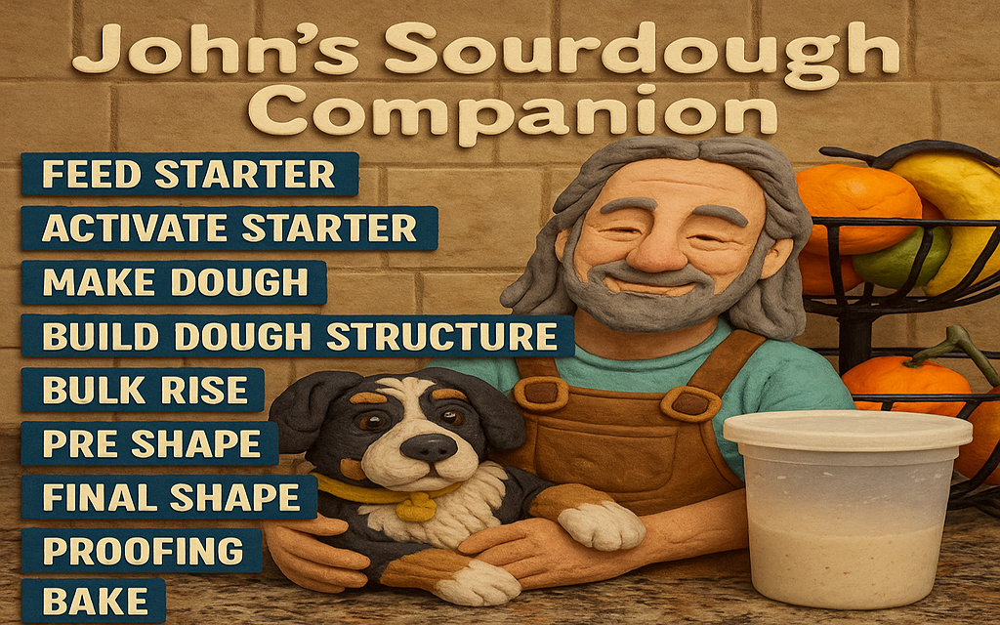

John's Souredough Companion
Total Flour Weight (g):
Bread Flour %:
75% (300g)
25% (100g)
Suggested Hydration:
72%
Water:
--
g
Salt:
--
g
Toggle Printable Instructions
Breadmaking Stages
Feed Starter:
Refresh starter 8–12 hours before use.
Activate Starter:
Use when doubled and bubbly.
Make Dough:
Mix flour, water, and starter. Add salt after autolyse.
Build Dough Structure:
Stretch and fold every 30–45 min.
Bulk Rise:
Let rise 3–6 hrs until ~doubled in size.
Pre-shape:
Rest dough 20–30 minutes after light shaping.
Final Shape:
Form dough into final shape for proofing.
Proofing:
Room temp (1–2 hrs) or cold proof overnight.
Bake:
Score and bake at 450–475°F until golden.